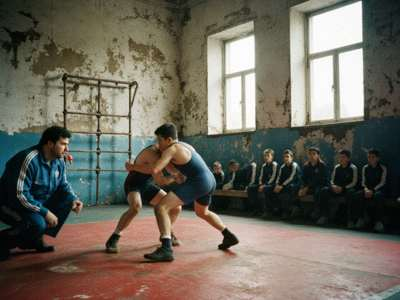

12.09.1999
|
Salam, sportsmen! This is the page of our wrestling section. I am Aibek, 16, I train here since 8 years old, and I made this page in the computer class with permission of our coach Mukhtar agai.  Evening training, our hall. Mukhtar agai watching (he always watches). It is a freestyle mat, the kürösh boys use the old one. TRAINING
Training is free. You need: tracksuit, wrestling shoes (or socks at first), towel, and a paper from the doctor. KÜRÖSH - what is it?Kürösh is our old wrestling with belts. Each wrestler wears a jacket and a belt, you hold the opponent's belt and throw him on his back. No legs grabbing. At every toi in the villages there was kürösh, the winner got a sheep or a horse. Mukhtar agai says freestyle makes you strong, kürösh makes you a man. We don't know what that means but we nod. RESULTS 1999
OUR COACHMukhtar agai — master of sport of the USSR, champion of the Iradi SSR 1976 and 1978. Coach since 1981. Strict. Never late. If you are late, 50 push-ups. If you are late and lie, 100. ADDRESSSport School No. 2, the old hall behind the stadium. Enter from the yard. Ask for the wrestling hall, the one that smells. Questions: aibek_borba@attelkom.net |